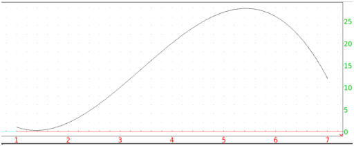

8.2.8 Polynomial regression: polynomial_regression polynomial_regression_plot
The polynomial_regression command finds
a more general polynomial y=a0xn + … + an which best fits a
set of data points.
-
polynomial_regression takes three arguments:
-
xcoords, a list of x-coordinates.
- ycoords, a list of y-coordinates.
- n, the degree of the polynomial.
You can combine the first two arguments into a matrix with two
columns (each list becomes a column of the matrix).
- polynomial_regression(xcoords,ycoords,n)
returns the list [an,…,a0] of coefficients of the best fit polynomial.
Example
Input:
polynomial_regression([[1,1],[2,2],[3,10],[4,20]],3)
or:
polynomial_regression([1,2,3,4],[1,2,10,20],3)
Output:
so the best fit polynomial will be y = (−5/6)x3 + (17/2)x2 −
(56/3)x + 12.
The polynomial_regression_plot command draws the best fit
polynomial.
-
polynomial_regression_plot takes three arguments:
-
xcoords, a list of x-coordinates.
- ycoords, a list of y-coordinates.
- n, the degree of the polynomial.
You can combine the first two arguments into a matrix with two
columns (each list becomes a column of the matrix).
- polynomial_regression_plot(xcoords,ycoords,n)
draws the best fit polynomial of degree n, and puts the equation
and R2 value above the graph.
Example
Input:
polynomial_regression_plot([1,2,3,4],[1,2,10,20],3)
Output:
